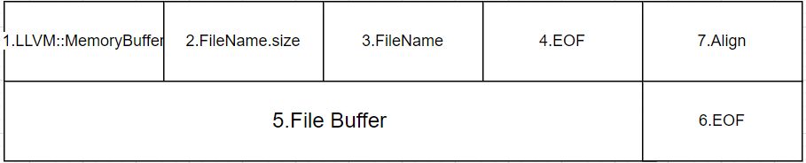

LLVM如何将文件读入内存——llvm::MemoryBuffer源码解析
本文是对How Swift and Clang Use LLVM to Read Files into Memory的学习，加上自己的笔记，更新为llvm17.0.0的源码。英语不错的小伙伴可以直接阅读原文。
llvm::MemoryBuffer是将文件或流读入内存的主要抽象类。由于它经常被 Swift、Clang 和 LLVM 等工具（如 llvm-tblgen）使用，了解它的工作原理非常有价值。
比如，llvm::MemoryBuffer会传递给llvm::SourceMgr，以便在缓冲区的特定位置发出诊断信息。
libLLVMSupport的llvm::MemoryBuffer类的文档表示它“提供对内存块的简单只读访问，并提供将文件和标准输入读入内存缓冲区的简单方法。 https://llvm.org/doxygen/classllvm_1_1MemoryBuffer.html
一、C++将文件读入内存
作者首先在第一章介绍了c++读取文件的两种方式：
1.传统读取文件到内存的方式
读取文件调用到的四个系统函数：
open(2)：用于获取文件的文件描述符。fstat：返回与文件描述符相关的信息。比如文件的size。read(2)：从文件中读取指定数量的字节到预先分配的内存块中。close(2)：用于在使用完文件描述符后关闭文件。
作者写了一个read.cpp 程序的例子：分配内存并将其自身的源文件读入该内存中，并打印出文件的第一行。实际上，这与llvm::MemoryBuffer::getFile函数非常相似。但是还有改进的空间。
2.使用 mmap(2) 将大文件读入内存
回想一下，我们使用new运算符在堆上分配了内存，然后使用系统调用 read(2) 来将文件的内容填充到该内存中：如果我们需要读取一个非常大的文件到内存中，这种分配方式就会有问题。一个大小为1GB的文件会导致分配1GB的内存空间，这是相当大的RAM！
作者在read.cpp 程序中加上了mmap(2)的使用。
这篇博客详细介绍了mmap的原理：认真分析mmap：是什么 为什么 怎么用
mmap(2)允许我们一次读取文件的部分位。常规文件操作需要从磁盘到页缓存再到用户主存的两次数据拷贝。而mmap操控文件，只需要从磁盘到用户主存的一次数据拷贝过程。当读写磁盘文件的数据较小(少于1MB)时候，使用内存文件映射和普通IO是差异很小的，所以建议使用普通IO就可以了；当很多文件的大小在几十MB, 几百MB, 或者1GB以上的文件数据需要进行较频繁的访问，或者一开始需要全部加载这些大文件的时候，那么就需要考虑使用内存文件映射了。
回到文章
大多数情况下，llvm::MemoryBuffer 的工作方式与上面的 read.cpp 程序完全相同。它还有一些额外的功能：可以在 Unix 和 Windows 上运行，使用更复杂的启发式来决定是否使用 mmap(2)，并且在支持它们的平台上使用一些有趣的系统调用和选项。会在下面详细介绍这些内容。
二、LLVM读文件的实现接口：llvm::MemoryBuffer::getFileOrSTDIN
llvm::MemoryBuffer::getFileOrSTDIN函数返回给定文件的 llvm::MemoryBuffer std::unique_ptr，或者返回一个llvm::ErrorOr类型表示。（关于llvm::ErrorOr的内容，可以观看 LLVM Developers Meeting 2016 了解更多信息。）
llvm/include/llvm/Support/MemoryBuffer.h
/// Open the specified file as a MemoryBuffer, or open stdin if the Filename
/// is "-".
static ErrorOr<std::unique_ptr<MemoryBuffer>>
getFileOrSTDIN(const Twine &Filename, bool IsText = false,
bool RequiresNullTerminator = true,
std::optional<Align> Alignment = std::nullopt);
llvm/lib/Support/MemoryBuffer.cpp
ErrorOr<std::unique_ptr<MemoryBuffer>>
MemoryBuffer::getFileOrSTDIN(const Twine &Filename, bool IsText,
bool RequiresNullTerminator,
std::optional<Align> Alignment) {
SmallString<256> NameBuf;
StringRef NameRef = Filename.toStringRef(NameBuf);
if (NameRef == "-")
return getSTDIN();
return getFile(Filename, IsText, RequiresNullTerminator,
/*IsVolatile=*/false, Alignment);
}
getFileOrSTDIN函数只是检查文件名是否为“-”，然后将其逻辑交给llvm::MemoryBuffer::getSTDIN或getFile。
https://github.com/Laity000/llvm-project/blob/llvmorg-17.0.0/llvm/lib/Support/MemoryBuffer.cpp#L252-L281
ErrorOr<std::unique_ptr<MemoryBuffer>>
MemoryBuffer::getFile(const Twine &Filename, bool IsText,
bool RequiresNullTerminator, bool IsVolatile,
std::optional<Align> Alignment) {
return getFileAux<MemoryBuffer>(Filename, /*MapSize=*/-1, /*Offset=*/0,
IsText, RequiresNullTerminator, IsVolatile,
Alignment);
}
template <typename MB>
static ErrorOr<std::unique_ptr<MB>>
getFileAux(const Twine &Filename, uint64_t MapSize, uint64_t Offset,
bool IsText, bool RequiresNullTerminator, bool IsVolatile,
std::optional<Align> Alignment) {
Expected<sys::fs::file_t> FDOrErr = sys::fs::openNativeFileForRead(
Filename, IsText ? sys::fs::OF_TextWithCRLF : sys::fs::OF_None);
if (!FDOrErr)
return errorToErrorCode(FDOrErr.takeError());
sys::fs::file_t FD = *FDOrErr;
auto Ret = getOpenFileImpl<MB>(FD, Filename, /*FileSize=*/-1, MapSize, Offset,
RequiresNullTerminator, IsVolatile, Alignment);
sys::fs::closeFile(FD);
return Ret;
}
这里我们重点看下getFile函数，委托给一个名为getFileAux局部静态函数。实现了上面的 read.cpp 示例中的一些逻辑：打开文件以获取文件描述符，读取该文件，然后调用close(2)以关闭文件描述符。
总结：
函数调用：
llvm::MemoryBuffer::getFileOrSTDIN–>llvm::MemoryBuffer::getFile–>getFileAux整体逻辑：
打开文件以获取文件描述符
读取该文件
关闭文件描述符
上述实现根据Windows和Unix两个不同操作系统分别实现
三、LLVM文件系统
但是getFileAux函数不会直接调用open(2)系统调用来获取给定文件名的打开文件描述符。相反，它使用llvm::sys::fs::openNativeFileForRead函数。这个LLVM辅助函数与open(2)不同，可以在Windows和Unix操作系统平台上工作。
下面这里是FileSystem.h头文件，和llvm::sys::fs::openNativeFileForRead函数声明，根据平台的类型不同分别在llvm/lib/Support/Unix/Path.inc和llvm/lib/Support/Windows/Path.inc中各自实现
llvm/include/llvm/Support/FileSystem.h
// This file declares the llvm::sys::fs namespace. It is designed after
// TR2/boost filesystem (v3), but modified to remove exception handling and the
// path class.
#if defined(_WIN32)
// A Win32 HANDLE is a typedef of void*
using file_t = void *;
#else
using file_t = int;
#endif
...
/// @brief Opens the file with the given name in a read-only mode, returning
/// its open file descriptor.
/// @returns a platform-specific file descriptor if \a Name has been opened,
/// otherwise an error object.
Expected<file_t>
openNativeFileForRead(const Twine &Name, OpenFlags Flags = OF_None,
SmallVectorImpl<char> *RealPath = nullptr);
/// @brief Opens the file with the given name in a read-only mode, returning
/// its open file descriptor.
/// @param Name The path of the file to open, relative or absolute.
/// @param ResultFD If the file could be opened successfully, its descriptor
std::error_code openFileForRead(const Twine &Name, int &ResultFD,
OpenFlags Flags = OF_None,
SmallVectorImpl<char> *RealPath = nullptr);
比如llvm/lib/Support/Unix/Path.inc，这里走的就是Unix平台的。最终会产生一个文件描述符file_t ResultFD
Expected<file_t> openNativeFileForRead(const Twine &Name, OpenFlags Flags,
SmallVectorImpl<char> *RealPath) {
file_t ResultFD;
std::error_code EC = openFileForRead(Name, ResultFD, Flags, RealPath);
if (EC)
return errorCodeToError(EC);
return ResultFD;
}
LLVM是如何识别操作系统平台的？
// Include the truly platform-specific parts.
#if defined(LLVM_ON_UNIX)
#include "Unix/Path.inc"
#endif
#if defined(LLVM_ON_WIN32)
#include "Windows/Path.inc"
#endif
那么LLVM_ON_UNIX宏是在何时被设置的？
step1：整体引入哪些cmake配置
首先，LLVM的根CMakeLists.txt文件会将下面两个目录添加到其模块路径中，引入这些目录中的cmake文件：llvm/cmake/config-ix.cmake和llvm/cmake/modules/HandleLLVMOptions.cmake。最后，它配置了一个名为config.h.cmake的头文件：
set(CMAKE_MODULE_PATH
${CMAKE_MODULE_PATH}
"${CMAKE_CURRENT_SOURCE_DIR}/cmake
"${CMAKE_CURRENT_SOURCE_DIR}/cmake/modules"
)
...
include(config-ix)
include(HandleLLVMOptions)
...
configure_file(
${LLVM_MAIN_INCLUDE_DIR}/llvm/Config/config.h.cmake
${LLVM_INCLUDE_DIR}/llvm/Config/config.h)
step2：通过`check_symbol_exists设置CMake变量
config-ix.cmake文件使用内置的CMake函数check_symbol_exists来确定目标构建环境中哪些系统调用是可用的。例如，它检查pread是否可用，如果是，则让CMake定义一个名为HAVE_PREAD的变量
check_symbol_exists(pread unistd.h HAVE_PREAD)
step3：定义类似LLVM_ON_UNIXCMake变量
然后，在HandleLLVMOptions.cmake中，它使用内置的 CMake 平台变量 WIN32 和 UNIX 来设置 CMake 变量 LLVM_ON_WIN32 和 LLVM_ON_UNIX 为 True 或 False：
if(WIN32)
...
set(LLVM_ON_WIN32 1)
set(LLVM_ON_UNIX 0)
...
else(WIN32)
if(UNIX)
set(LLVM_ON_WIN32 0)
set(LLVM_ON_UNIX 1)
...
endif(WIN32)
step4：使用configure_file将cmake变量映射到c++#define宏
但是，像 HAVE_PREAD 和 LLVM_ON_UNIX 这样的 CMake 变量只能在 CMake 内部可见。为了使它们的值在 C++ 中可见，通过调用 CMake 内置函数 configure_file 来配置 config.h.cmake 文件，如上面的代码片段所示。config.h.cmake 文件充满了 #cmakedefine指令，configure_file 将其转换为 C++ 中可识别的 #define 语句。
llvm/include/llvm/Config/config.h.cmake
/* Define to 1 if you have the `pread' function. */
#cmakedefine HAVE_PREAD ${HAVE_PREAD}
/* Define if this is Unixish platform */
#cmakedefine LLVM_ON_UNIX ${LLVM_ON_UNIX}
/* Define if this is Win32ish platform */
#cmakedefine LLVM_ON_WIN32 ${LLVM_ON_WIN32}
四、在Unix上打开文件
回到正题
llvm::sys::fs::openFileForRead函数的Unix实现也是使用系统调用open(2)来打开文件并获取其文件描述符：
std::error_code openFile(const Twine &Name, int &ResultFD,
CreationDisposition Disp, FileAccess Access,
OpenFlags Flags, unsigned Mode) {
int OpenFlags = nativeOpenFlags(Disp, Flags, Access);
SmallString<128> Storage;
StringRef P = Name.toNullTerminatedStringRef(Storage);
// Call ::open in a lambda to avoid overload resolution in RetryAfterSignal
// when open is overloaded, such as in Bionic.
auto Open = [&]() { return ::open(P.begin(), OpenFlags, Mode); };
if ((ResultFD = sys::RetryAfterSignal(-1, Open)) < 0)
return std::error_code(errno, std::generic_category());
首先，它不直接调用 open(2)，而是调用 llvm::sys::RetryAfterSignal，后者在一个循环中调用 open(2)。 如果 open(2) 调用失败并返回 EINTR 错误码，则该循环将重试 open(2) 调用。
https://github.com/Laity000/llvm-project/blob/llvmorg-17.0.0/llvm/include/llvm/Support/Errno.h#L31-L40
template <typename FailT, typename Fun, typename... Args>
inline decltype(auto) RetryAfterSignal(const FailT &Fail, const Fun &F,
const Args &... As) {
decltype(F(As...)) Res;
do {
errno = 0;
Res = F(As...);
} while (Res == Fail && errno == EINTR);
return Res;
}
RetryAfterSignal 函数有三个模板参数：
const FailT &Fail，表示函数调用失败时返回的值。
const Fun &F，表示可调用函数。
模板参数包 const Args &… As，表示传递给函数 F 的参数。
RetryAfterSignal 使用尾返回类型语法，形式为 auto function -> return_type。其返回类型被指定为 decltype(F(As…))。换句话说，返回类型是表达式 F(As…) 返回的类型。 将这一切映射到我们在 llvm::sys::fs::openFileForRead 中看到的具体示例中，回想一下该函数具有表达式 sys::RetryAfterSignal(-1, open, P.begin(), OpenFlags)。这里 -1 是失败值 const FailT &Fail，open 是函数值 const Fun &F，而 (P.begin(), OpenFlags) 是传递给 open 函数的模板参数包参数。返回类型是 open(P.begin(), OpenFlags) 返回的类型，即 int。
llvm::sys::RetryAfterSignal 函数会忽略 EINTR 并重试，因为类似于 “blocking” Unix 函数，如 open(2) 和 read(2)，每当它们被 Unix 信号中断时都会返回 EINTR。这样的中断可能由各种原因引起，其中一些可以在这里阅读更多。在这些情况下，LLVM 将简单地尝试再次执行。
在 llvm::sys::fs::openFileForRead 实现中的另一个特殊之处是检查 O_CLOEXEC，这是一个仅在 Linux 2.6.23 及以上版本存在的 open(2) 标志。此选项使操作系统在进程 fork 时自动关闭文件描述符。如果不可用，则实现将使用系统调用 fcntl 来设置类似的标志。
这里直接翻译的
五、在Unix上读取文件内容
llvm::sys::fs::openFileForRead函数打开一个文件并返回其文件描述符。然后返回到getFileAux函数，将打开的描述符传递给getOpenFileImpl静态函数。
template <typename MB>
static ErrorOr<std::unique_ptr<MB>>
getFileAux(const Twine &Filename, int64_t FileSize, uint64_t MapSize,
uint64_t Offset, bool RequiresNullTerminator, bool IsVolatile) {
int FD;
std::error_code EC = sys::fs::openFileForRead(Filename, FD);
if (EC)
return EC;
auto Ret = getOpenFileImpl<MB>(FD, Filename, FileSize, MapSize, Offset,
RequiresNullTerminator, IsVolatile);
close(FD);
return Ret;
}
Step0：getOpenFileImpl读取文件的入口函数
getOpenFileImpl实现了本文开头的read.cpp示例中的相同逻辑。如果未提供文件大小，则通过调用llvm::sys::fs::status来找出文件的大小，该函数在Unix系统中调用fstat。然后，它会根据情况决定是使用mmap(2)还是使用operator new提前分配内存。如果它分配了内存，那么它将使用系统调用read(2)（如果HAVE_PREAD为true，则使用pread）来将文件的字节读入内存中。
template <typename MB>
static ErrorOr<std::unique_ptr<MB>>
getOpenFileImpl(sys::fs::file_t FD, const Twine &Filename, uint64_t FileSize,
uint64_t MapSize, int64_t Offset, bool RequiresNullTerminator,
bool IsVolatile, std::optional<Align> Alignment) {
static int PageSize = sys::Process::getPageSizeEstimate();
// Default is to map the full file.
if (MapSize == uint64_t(-1)) {
// If we don't know the file size, use fstat to find out. fstat on an open
// file descriptor is cheaper than stat on a random path.
if (FileSize == uint64_t(-1)) {
sys::fs::file_status Status;
std::error_code EC = sys::fs::status(FD, Status);
if (EC)
return EC;
// If this not a file or a block device (e.g. it's a named pipe
// or character device), we can't trust the size. Create the memory
// buffer by copying off the stream.
sys::fs::file_type Type = Status.type();
if (Type != sys::fs::file_type::regular_file &&
Type != sys::fs::file_type::block_file)
return getMemoryBufferForStream(FD, Filename);
FileSize = Status.getSize();
}
MapSize = FileSize;
}
if (shouldUseMmap(FD, FileSize, MapSize, Offset, RequiresNullTerminator,
PageSize, IsVolatile)) {
std::error_code EC;
std::unique_ptr<MB> Result(
new (NamedBufferAlloc(Filename)) MemoryBufferMMapFile<MB>(
RequiresNullTerminator, FD, MapSize, Offset, EC));
if (!EC)
return std::move(Result);
}
#ifdef __MVS__
// Set codepage auto-conversion for z/OS.
if (auto EC = llvm::enableAutoConversion(FD))
return EC;
#endif
auto Buf =
WritableMemoryBuffer::getNewUninitMemBuffer(MapSize, Filename, Alignment);
if (!Buf) {
// Failed to create a buffer. The only way it can fail is if
// new(std::nothrow) returns 0.
return make_error_code(errc::not_enough_memory);
}
// Read until EOF, zero-initialize the rest.
MutableArrayRef<char> ToRead = Buf->getBuffer();
while (!ToRead.empty()) {
Expected<size_t> ReadBytes =
sys::fs::readNativeFileSlice(FD, ToRead, Offset);
if (!ReadBytes)
return errorToErrorCode(ReadBytes.takeError());
if (*ReadBytes == 0) {
std::memset(ToRead.data(), 0, ToRead.size());
break;
}
ToRead = ToRead.drop_front(*ReadBytes);
Offset += *ReadBytes;
}
return std::move(Buf);
}
Step1：查看文件大小
llvm::sys::Process::getPageSizeEstimate和llvm::sys::fs::status函数上面使用了与llvm::sys::fs::openFileForRead相同的CMake技巧，以包含平台特定的实现：getPageSize在llvm/lib/Support/Unix/Process.inc和Windows/Process.inc中实现，而status在Unix/Path.inc和Windows/Path.inc中实现。在Unix上，它们使用系统调用getpagesize和fstat来从操作系统获取所需的信息。
/// Get the process's estimated page size.
/// This function always succeeds, but if the underlying syscall to determine
/// the page size fails then this will silently return an estimated page size.
/// The estimated page size is guaranteed to be a power of 2.
static unsigned getPageSizeEstimate() {
if (auto PageSize = getPageSize())
return *PageSize;
else {
consumeError(PageSize.takeError());
return 4096;
}
}
Step2：根据文件大小决定走哪种读取文件方式
上面的代码根据辅助函数 shouldUseMMap 返回 true 还是 false，实例化了 llvm::MemoryBufferMMapFile 或 llvm::WritableMemoryBuffer。就像在本文开头的 read.cpp 示例中一样，决定使用哪种方式的一个标准是文件的大小 - 例如，如果文件大小小于系统上的一页，或小于16千字节，则不使用 mmap(2)：
static bool shouldUseMmap(int FD,
size_t FileSize,
size_t MapSize,
off_t Offset,
bool RequiresNullTerminator,
int PageSize,
bool IsVolatile) {
...
// We don't use mmap for small files because this can severely fragment our
// address space.
if (MapSize < 4 * 4096 || MapSize < (unsigned)PageSize)
return false;
...
return true;
}
Step3。1：分配文件内存到llvm::WritableMemoryBuffer
getOpenFileImpl函数调用静态函数llvm::WritableMemoryBuffer::getNewUninitMemBuffer来分配缓冲区内存，就像read.cpp示例中所做的那样，使用new运算符。但与read.cpp示例程序不同的是，通过llvm::MemoryBuffer类来分配内存：不仅为存储文件内容的缓冲区分配内存，还为llvm::MemoryBuffer类的实例和文件的名称分配空间
std::unique_ptr<WritableMemoryBuffer>
WritableMemoryBuffer::getNewUninitMemBuffer(size_t Size,
const Twine &BufferName,
std::optional<Align> Alignment) {
using MemBuffer = MemoryBufferMem<WritableMemoryBuffer>;
// Use 16-byte alignment if no alignment is specified.
Align BufAlign = Alignment.value_or(Align(16));
// Allocate space for the MemoryBuffer, the data and the name. It is important
// that MemoryBuffer and data are aligned so PointerIntPair works with them.
SmallString<256> NameBuf;
StringRef NameRef = BufferName.toStringRef(NameBuf);
// 创建内存:1.MemoryBuffer(*start, *end) + 2.文件名长度 + 3.文件名 + 4.结尾符 + + 7.对齐
size_t StringLen = sizeof(MemBuffer) + sizeof(size_t) + NameRef.size() + 1;
// 5.文件内容 + 6.结尾符
size_t RealLen = StringLen + Size + 1 + BufAlign.value();
if (RealLen <= Size) // Check for rollover.
return nullptr;
char *Mem = static_cast<char*>(operator new(RealLen, std::nothrow));
if (!Mem)
return nullptr;
// The name is stored after the class itself.
*reinterpret_cast<size_t *>(Mem + sizeof(MemBuffer)) = NameRef.size();
CopyStringRef(Mem + sizeof(MemBuffer) + sizeof(size_t), NameRef);
// The buffer begins after the name and must be aligned.
char *Buf = (char *)alignAddr(Mem + StringLen, BufAlign);
Buf[Size] = 0; // Null terminate buffer.
auto *Ret = new (Mem) MemBuffer(StringRef(Buf, Size), true);
return std::unique_ptr<WritableMemoryBuffer>(Ret);
}
各个分配的内存示意如下：（对应上面代码加的中文注释位置） 
详见介绍如下：
llvm::WritableMemoryBuffer::getNewUninitMemBuffer函数分配并返回内存缓冲区llvm::MemoryBufferMem<llvm::WritableMemoryBuffer>。MemoryBufferMem<T> 被定义为 T 的子类。在这种情况下，T 是 llvm::WritableMemoryBuffer，它又派生自 llvm::MemoryBuffer。MemoryBufferMem 的构造函数通过调用llvm::MemoryBuffer::init初始化
所以本质上分配的是llvm::MemoryBuffer，来管理上图整块内存，并通过llvm::MemoryBuffer的start和end指针映射到文件内容的开始和结尾
使用
operator new来分配整块内存,只分配不初始化使用
placement new，初始化第一块内存llvm::MemoryBuffer,通过llvm::MemoryBuffer的start和end指针映射到文件内容的开始和结尾处，即char *Buf指针地址c++new介绍：operator new与placement new
llvm/include/llvm/Support/MemoryBuffer.h
/// This interface provides simple read-only access to a block of memory, and
/// provides simple methods for reading files and standard input into a memory
/// buffer. In addition to basic access to the characters in the file, this
/// interface guarantees you can read one character past the end of the file,
/// and that this character will read as '\0'.
///
/// The '\0' guarantee is needed to support an optimization -- it's intended to
/// be more efficient for clients which are reading all the data to stop
/// reading when they encounter a '\0' than to continually check the file
/// position to see if it has reached the end of the file.
class MemoryBuffer {
const char *BufferStart; // Start of the buffer.
const char *BufferEnd;
...
};
Step3.2 通过sys::fs::readNativeFileSlice读取文件内容到文件内存
Expected<size_t> readNativeFileSlice(file_t FD, MutableArrayRef<char> Buf,
uint64_t Offset) {
#if defined(__APPLE__)
size_t Size = std::min<size_t>(Buf.size(), INT32_MAX);
#else
size_t Size = Buf.size();
#endif
#ifdef HAVE_PREAD
ssize_t NumRead =
sys::RetryAfterSignal(-1, ::pread, FD, Buf.data(), Size, Offset);
#else
if (lseek(FD, Offset, SEEK_SET) == -1)
return errorCodeToError(std::error_code(errno, std::generic_category()));
ssize_t NumRead = sys::RetryAfterSignal(-1, ::read, FD, Buf.data(), Size);
#endif
if (NumRead == -1)
return errorCodeToError(std::error_code(errno, std::generic_category()));
return NumRead;
}
根据操作系统上可用的内容，使用read(2)或pread读取文件的内容。
Step4：MemoryBufferMMapFile方式读取文件
llvm/lib/Support/MemoryBuffer.cpp
template <typename MB>
static ErrorOr<std::unique_ptr<MB>>
getOpenFileImpl(int FD, const Twine &Filename, uint64_t FileSize,
uint64_t MapSize, int64_t Offset, bool RequiresNullTerminator,
bool IsVolatile) {
if (shouldUseMmap(FD, FileSize, MapSize, Offset, RequiresNullTerminator,
PageSize, IsVolatile)) {
std::error_code EC;
std::unique_ptr<MB> Result(
new (NamedBufferAlloc(Filename)) MemoryBufferMMapFile<MB>(
RequiresNullTerminator, FD, MapSize, Offset, EC));
if (!EC)
return std::move(Result);
}
auto Buf = WritableMemoryBuffer::getNewUninitMemBuffer(MapSize, Filename);
return std::move(Buf);
}
回忆一下，如果 shouldUseMMap 返回 true，getOpenFileImpl 将实例化一个 llvm::MemoryBufferMMapFile：
/// Memory maps a file descriptor using sys::fs::mapped_file_region.
///
/// This handles converting the offset into a legal offset on the platform.
template<typename MB>
class MemoryBufferMMapFile : public MB {
sys::fs::mapped_file_region MFR;
static uint64_t getLegalMapOffset(uint64_t Offset) {
return Offset & ~(sys::fs::mapped_file_region::alignment() - 1);
}
static uint64_t getLegalMapSize(uint64_t Len, uint64_t Offset) {
return Len + (Offset - getLegalMapOffset(Offset));
}
const char *getStart(uint64_t Len, uint64_t Offset) {
return MFR.const_data() + (Offset - getLegalMapOffset(Offset));
}
public:
MemoryBufferMMapFile(bool RequiresNullTerminator, sys::fs::file_t FD, uint64_t Len,
uint64_t Offset, std::error_code &EC)
: MFR(FD, Mapmode<MB>, getLegalMapSize(Len, Offset),
getLegalMapOffset(Offset), EC) {
if (!EC) {
const char *Start = getStart(Len, Offset);
MemoryBuffer::init(Start, Start + Len, RequiresNullTerminator);
}
}
/// Disable sized deallocation for MemoryBufferMMapFile, because it has
/// tail-allocated data.
void operator delete(void *p) { ::operator delete(p); }
StringRef getBufferIdentifier() const override {
// The name is stored after the class itself.
return StringRef(reinterpret_cast<const char *>(this + 1) + sizeof(size_t),
*reinterpret_cast<const size_t *>(this + 1));
}
MemoryBuffer::BufferKind getBufferKind() const override {
return MemoryBuffer::MemoryBuffer_MMap;
}
void dontNeedIfMmap() override { MFR.dontNeed(); }
};
llvm::MemoryBufferMMapFile类利用了llvm::sys::fs::mapped_file_region类，这是对mmap(2)和munmap系统调用的封装：
std::error_code mapped_file_region::init(int FD, uint64_t Offset,
mapmode Mode) {
Mapping = ::mmap(nullptr, Size, prot, flags, FD, Offset);
if (Mapping == MAP_FAILED)
return std::error_code(errno, std::generic_category());
return std::error_code();
}
mapped_file_region::mapped_file_region(int fd, mapmode mode, size_t length,
uint64_t offset, std::error_code &ec)
: Size(length), Mapping(), FD(fd), Mode(mode) {
ec = init(fd, offset, mode);
if (ec)
Mapping = nullptr;
}
mapped_file_region::~mapped_file_region() {
if (Mapping)
::munmap(Mapping, Size);
}
总结：
学习了
getFileOrSTDIN整个函数的流程：函数入口：
llvm::MemoryBuffer::getFileOrSTDIN–>llvm::MemoryBuffer::getFile–>getFileAux打开文件以获取文件描述符：
llvm::sys::fs::openNativeFileForRead–>llvm::sys::RetryAfterSignal–>open(2)读取该文件:入口
getOpenFileImpl–>查看文件大小llvm::sys::Process::getPageSizeEstimate–>判断使用哪种读取文件方式–>shouldUseMMapread：分配内存
getNewUninitMemBuffer–>读取文件sys::fs::readNativeFileSlicemmap：
MemoryBufferMMapFile
关闭文件描述符
本质上是创建
llvm::MemoryBuffer来封装和管理整块内存，并通过llvm::MemoryBuffer的start和end指针映射到文件内容的开始和结尾上述实现根据Windows和Unix两个不同操作系统分别实现，学习了cmake中来根据操作系统平台实现不同代码，(头文件中声明同一份接口)：
模块引入，
CMake 平台环境变量
check_symbol_exists用法configure_file用法